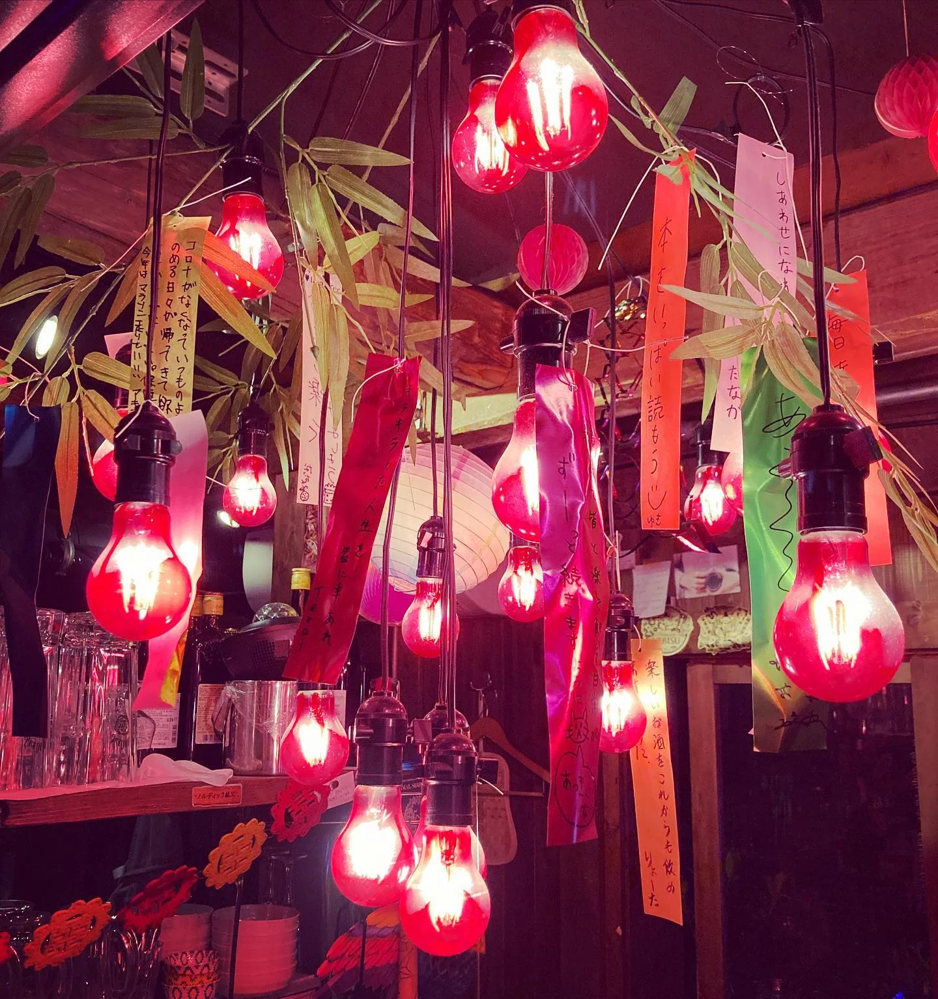

2021年6月24日
七夕は中国が起源だそうですよ！

七夕は中国が起源だそうですよ！ こんなご時世だからこそ、 願い事を書くっていうのも素敵ですね！ 有馬の赤いアレに、短冊つけてもらってます！ 願えば叶うとはいきませんが、 願わんかったら叶わないというのもしかり。 幼少期に戻って願い事を書くっていうのはいかがでしょうか✨🎋 ７月７日まで飾っていただけますんで、 ぜひお待ちしてます！！ 書いていただいた短冊は、 神社でお焚き上げしてもらいにいきます！！ #中華バル#中華#中華料理#福島区グルメ#路地裏#B級グルメ#中国#チャイニーズ#路地裏チャイニーズ有馬#有馬#シュウマイ#餃子#点心#フォローミー#followme#パクチー#麻婆豆腐 #七夕#忠彦星#クレイジー七夕